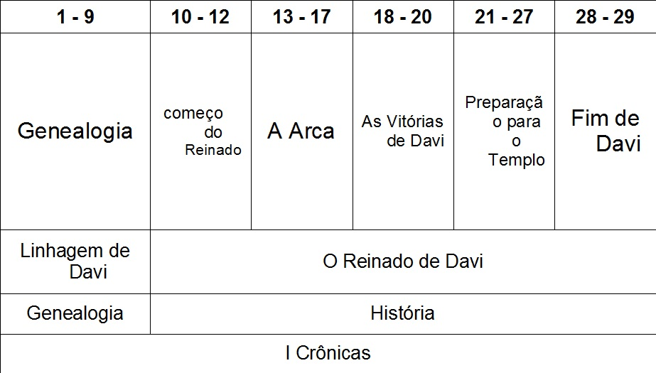
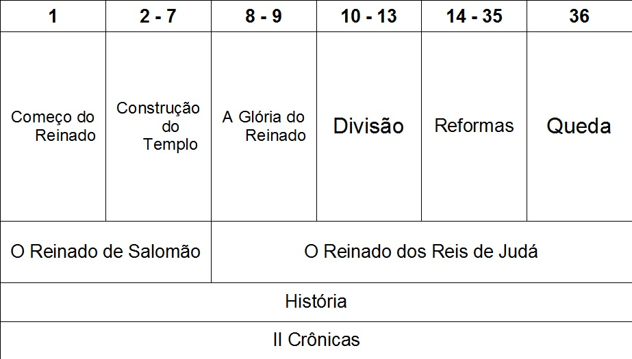
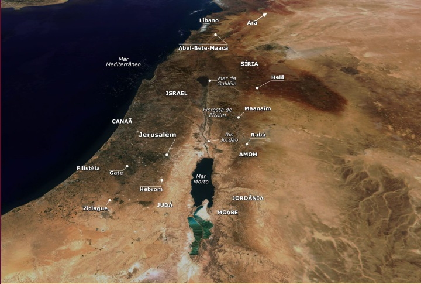
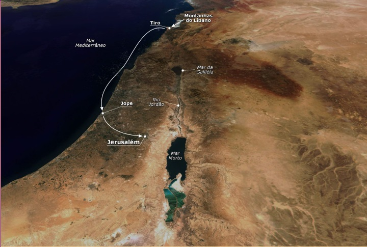
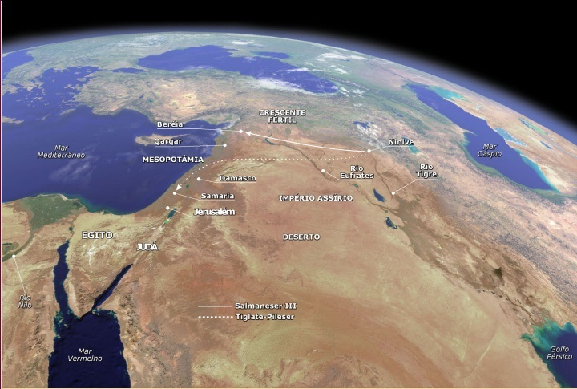

Panorama
do Antigo
Testamento
Adaptado de Edgar José Dallegrave
Livros
Históricos
I e II Crônicas
Livro de I Crônicas

Livro de II Crônicas

Título:
- Hebraico "Os eventos dos Tempos" (um
só livro)
Autor:
- Esdras? ( II 36:22; Ed 1:1-2)
Data:
- 500 a.C.
Versículo Chave:
- I Cr 17: 11-14 (29:26)
- II Cr 7:14 (15:2, 16:9)
Frase Chave:
- Judá e o Templo
- Hebraico "Os eventos dos Tempos" (um
só livro)
Autor:
- Esdras? ( II 36:22; Ed 1:1-2)
Data:
- 500 a.C.
Versículo Chave:
- I Cr 17: 11-14 (29:26)
- II Cr 7:14 (15:2, 16:9)
Frase Chave:
- Judá e o Templo
Propósito:
- Escrito para relembrar ao remanescentes,
pós-exílio, suas raízes espirituais e encorajá-los à
fidelidade à aliança, especificar o culto do Templo,
enfatizando a sua importância, mostrando também
a linhagem davídica, e as alianças com Deus.
Personagens Ilustres:
- Davi e Salomão
Contribuição para o Cânon:
- São livros de encorajamento para o
remanescente! Um futuro glorioso permanece
para o povo de Deus! A linhagem davídica
permanece.
- Escrito para relembrar ao remanescentes,
pós-exílio, suas raízes espirituais e encorajá-los à
fidelidade à aliança, especificar o culto do Templo,
enfatizando a sua importância, mostrando também
a linhagem davídica, e as alianças com Deus.
Personagens Ilustres:
- Davi e Salomão
Contribuição para o Cânon:
- São livros de encorajamento para o
remanescente! Um futuro glorioso permanece
para o povo de Deus! A linhagem davídica
permanece.
Fatos Interessantes:
- Pensa-se que o altar para as ofertas queimadas
ficava no mesmo lugar, indicado pela tradição,
como sendo onde Abraão ofereceu Isaque.
- Crônicas tem papel semelhante ao de
Deuteronômio no Pentateuco e João nos
evangelhos: suprir outros detalhes e explicações
da perspectiva divina. (espiritual)
- Cobre um período mais abrangente do que
qualquer outro livro do Antigo Testamento (Adão
até Ciro)
- Foi o último livro da Bíblia hebraica, longe de
I e II Reis, talvez por que sejam bem diferentes em
propósito.
- Pensa-se que o altar para as ofertas queimadas
ficava no mesmo lugar, indicado pela tradição,
como sendo onde Abraão ofereceu Isaque.
- Crônicas tem papel semelhante ao de
Deuteronômio no Pentateuco e João nos
evangelhos: suprir outros detalhes e explicações
da perspectiva divina. (espiritual)
- Cobre um período mais abrangente do que
qualquer outro livro do Antigo Testamento (Adão
até Ciro)
- Foi o último livro da Bíblia hebraica, longe de
I e II Reis, talvez por que sejam bem diferentes em
propósito.
Pontos Notáveis:
- Tudo o que se relaciona com o Templo tem grande ênfase
- A perspectiva de Crônicas é bem positiva: libertação,
arrependimento, reforma; comparado com Samuel e Reis:
guerra, idolatria e ofensa
- A aliança davídica é reiterada
- A genealogia mostra, a fidelidade de Deus através dos
séculos, especialmente a preservação da linhagem de Davi
- I e II Crônicas recapitulam a história de II Samuel e I e
II Reis
- II Cr 5: 13 - 14 um evento bem importante a presença da
Glória do Senhor abençoa o novo Templo
Templo
- Todos os reis de Judá são considerados em relação ao
Templo como o centro do culto
- O foco de Crônicas: Judá ------ Davi ------ Templo!
- Tudo o que se relaciona com o Templo tem grande ênfase
- A perspectiva de Crônicas é bem positiva: libertação,
arrependimento, reforma; comparado com Samuel e Reis:
guerra, idolatria e ofensa
- A aliança davídica é reiterada
- A genealogia mostra, a fidelidade de Deus através dos
séculos, especialmente a preservação da linhagem de Davi
- I e II Crônicas recapitulam a história de II Samuel e I e
II Reis
- II Cr 5: 13 - 14 um evento bem importante a presença da
Glória do Senhor abençoa o novo Templo
Templo
- Todos os reis de Judá são considerados em relação ao
Templo como o centro do culto
- O foco de Crônicas: Judá ------ Davi ------ Templo!
Aplicações:
- Ofertas ao Senhor devem "me custar"
- Deus é fiel, ele preserva Seu povo
apesar de grandes dificuldades
- A adoração a Deus deve acontecer nas
nossas vidas
- Ofertas ao Senhor devem "me custar"
- Deus é fiel, ele preserva Seu povo
apesar de grandes dificuldades
- A adoração a Deus deve acontecer nas
nossas vidas


